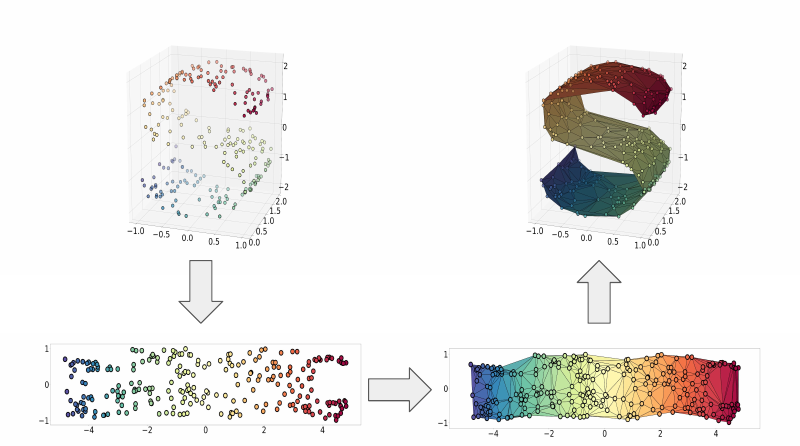

Coordinate Chart Particle Filter for Deformable Object Pose Estimation
The idea of using manifold learning to build useful representations of deformable objects is an idea Professor Chad Jenkins and I have discussed on many occasions; he envisioned an experiment where we manipulate a deformable object, such as a piece of paper, for a robot, and the robot uses that information to learn how the object can change. Together with Dr. Jenkins and Dr. Karthik Desingh, we distilled this concept into a much more specific experiment: pose estimation/tracking of a deformable object. The usage of manifold learning to construct a low-dimensional object representation was necessary, as particle filters may struggle to converge in high-dimensional spaces.
The theoretical requirement of our project was a bijective mapping between manifold data and its embedding. The initial mapping from the manifold to the embedding was constructed with ISOMAP. We then computed the Delaunay Triangulation of the embedding. To map points from the embedding back to the manifold, we computed its barycentric coordinates with respect to its containing simplex, and applied these to the corresponding points on the manifold. In effect, we map the simplices in the embedding back up to the manifold.

A visualization of the process for embedding the manifold, and then constructing the inverse mapping. The steps are, in order, embedding with ISOMAP, computing the Delaunay triangulation, and mapping simplices back to the manifold via barycentric coordinates.
The first deformable object we considered was a piece of string. I initially considered a piece of string lying flat on a 2D surface, as a simple starting point. By using a red string on a white background, it was easy to detect the string's position in each frame of a video. After learning an object representation with manifold learning, I was able to track the string position in a new video sequence.
In this video, I perform string tracking in a video sequence. I artificially added occlusions (represented by the white boxes) and false positives (represented by the red boxes).
I also used blender physics simulation to generate 3D rope data, and used this for experiments involving pose estimation. In the following videos, the ground truth is black, and the maximum likelihood estimate is in red. The latter two videos included simulated occlusion, which is represented by the dashed portion of the ground truth.
I also implemented a synthetic experiment, inspired by the paper PAMPAS: Real-Valued Graphical Models for Computer Vision. In this experiment, I attempted to locate a simulated articulated object in a cluttered image. The object is composed of a central, circular component, with four arms extending from it, with each arm including two links. I added a hidden kinematic constraint, where the joint angle between the center and an arm's inner link is the same as that between the inner and outer link. Using this model, the particle filter is able to find the object in a cluttered scene, even if the central node is occluded.
At this point, I moved on to the primary experiment for this project. Using the Lie-X mouse tracking dataset, I learned a deformable object model for the mouse, and used it for pose estimation and tracking tasks.
A visualization of the learned deformable model.
A simple pose-estimation task, from a single depth image.
A simple tracking task, from a series of depth image.
A similar tracking task, with an added occlusion.